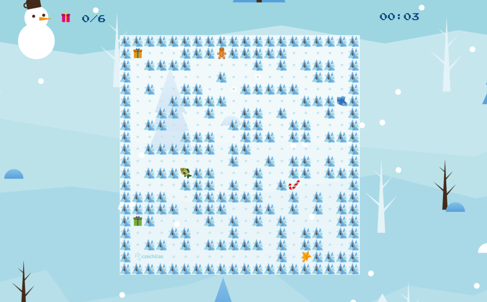
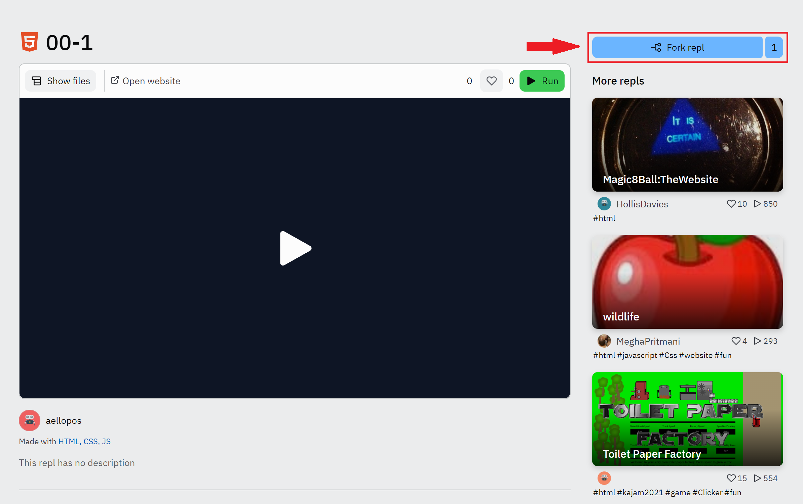
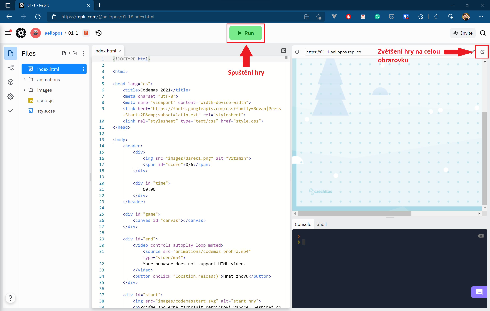

I. díl Codemas
Ahoj, vítej u prvního dílu letošní vánoční výzvy. Čeká nás důležitý úkol – společnými silami musíme zachránit pana Perníčka a jeho Vánoce. Navíc se u toho podíváme do světa programování.
Takhle bude na konci vypadat naše hra:
Pojďme začít tím, že si nastavíme prostředí, ve kterém celou hru budeme programovat. Mrkni do prerekvizit, kde zjistíš, jak si vytvořit účet v prostředí editoru Repl.it. Nemusíš si vytvářet nový projekt, budeme potřebovat několik předpřipravených kódů, proto si projekt prosím “naklonuj” z mého zadání, které najdeš tady. Stačí kliknout na Fork repl. Nový projekt se ti automaticky otevře ve tvém účtu.
Pokud máme projekt naklonovaný, můžeme se pustit do kódování! V projektu máme 3 soubory – index.html, style.css a script.js, zároveň máme k dispozici i složku s obrázky.
Zvětšení herní plochy
Herní ploše, do které umístíme panáčka a další herní objekty, se říká canvas. Canvas nám v HTML umožní vykreslovat různé obrázky a celkově obsahuje užitečné nástroje pro tvorbu webových her.
Prozatím je náš canvas maličký a právě v JavaScriptu (zkráceně JS) mu určíme velikost. Jeho velikost budeme uchovávat v tzv. proměnné. Proměnná je jedna z nejzákladnějších věcí, která se v programování používá. Tak jako my si ukládáme naše myšlenky do paměti, i počítač si musí někam uložit specifické hodnoty, aby na ně nezapomněl, a my s nimi mohli pracovat. Proměnnou si tedy představ jako nějakou krabičku v paměti počítače, kam se ukládají informace.
Proměnnou v JavaScriptu vytvoříme pomocí kouzelného slova let Možná už znáš odjinud deklaraci proměnné pomocí slova var. Pro naše účely dělá let a var v podstatě tu stejnou věc, my budeme používat modernější a novější let.
Když chceme v JS vytvořit novou proměnnou, uděláme to tímto způsobem:
let myVariable
Když do proměnné chceme vložit hodnotu, stačí napsat =, což je v JavaScriptu tzv. symbol přiřazení.
myVariable = 7
Protože na začátku programu většinou potřebujeme založit proměnné a ihned do nich vložit nějaké startovní hodnoty, lze založení proměnné a přiřazení hodnoty udělat v jednom kroku (odborně se tomu říká deklarovat proměnnou):
let myVariable = 7
Proměnnou pomocí slova let deklarujeme (založíme) pouze jednou. Potom už ji používáme a vkládáme do ní hodnotu pouze pomocí =.
let myVariable = 7 // a o chvíli později už jenom… myVariable = 13
Mimochodem, řádek začínající znaky // je komentář. Komentář je text, který se v programu ignoruje a neovlivňuje funkci kódu. Pomocí komentářů si můžeš do kódu dělat poznámky a spoustu poznámek najdeš i v ukázkovém kódu po každé lekci.
Pokud nemáš s programováním zkušenosti z dřívějška, tak si všimni několika věcí:
- Na velikosti písmen záleží – myVariable je něco jiného než myvariable.
- Ve jménech proměnných nemohou být mezery. Když chceš vytvořit víceslovný název, použij zápis, kde prvníPísmenoKaždéhoDalšíhoSlovaBudeVelké.
- Ve jménech proměnných jdou sice používat české znaky, ale je obvyklou praxí, že se používají jen písmena anglické abecedy bez háčků a čárek.
Ve script.js už máme připravený první řádek kódu:
let canvas = document.querySelector("#canvas")
První řádek nám odchytil canvas z HTML a díky tomu s ním můžeme v JavaScriptu pracovat. Založme si další 2 proměnné width a height, do kterých uložíme informaci o výšce a šířce:
let width = 600 let height = 600
A nyní nezbývá už nic jiného, než tyto dvě proměnné přiřadit výšce a šířce canvasu.
canvas.width = width canvas.height = height
Tímto doslova říkáme, že výška canvasu se rovná naší zadané výšce. Možná si říkáš, proč jsme tam tu hodnotu nenapsali rovnou, ale vkládáme ji tam skrz proměnnou. Je to nejlepší řešení s ohledem do budoucna. Kdybychom někdy v budoucnu chtěli měnit velikost canvas v kódu, budeme mít jistotu, že se na začátku našeho JavaScriptu nachází výchozí velikost, kterou kdykoliv můžeme použít. Když obnovíš stránku, měl by se ti canvas zvětšit.
Dnes máme hotovo! Hru si můžeme zapnout a podívat se na ni. Hru zapneš za pomoci zeleného tlačítka run.
Na závěr
První část kódu máme za sebou! Dobrá práce. Vzorový výsledek najdeš zde (klikni na tlačítko "Show files"). Už ve středu se vrhneme na generování celé herní plochy.
A protože budeme psát spoustu různých závorek a dalších zajímavých znaků, tak tady je malý tahák na klávesnici.
Pokud s něčím bojuješ, neboj se nám napsat pod příspěvek na naší facebookové události, rádi ti pomůžeme. K dotazu ideálně pošli i URL adresu s odkazem na tvůj projekt. :)
Michal z Czechitas